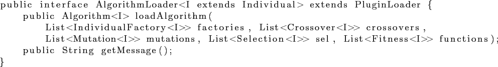
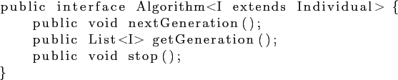
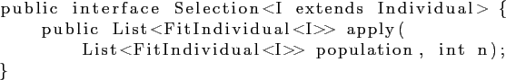

Основной интерфейс плагина — AlgorithmLoader.

- loadFactories — метод должен возвращать схему генетического алгоритма, а именно объект класса,
реализующего интерфейс Algorithm.

Данный интерфейс содержит следующие методы:
- nextGeneration — переход к следующему поколению особей.
- getGeneration — метод должен возвращать текущее поколение особей.
- stop — в текущей версии не используется.
- getMessage — метод должен возвращать сообщение о наличии и правильности
загрузки опрераторов отбора (Selection).

Единственный метод данного интерфейса должен возвращать список особей, напрямую переходящих в следующее поколение.